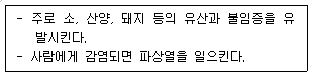
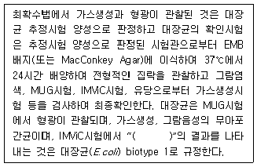
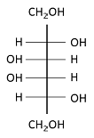
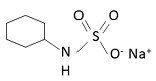
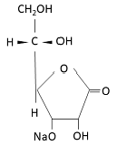
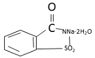
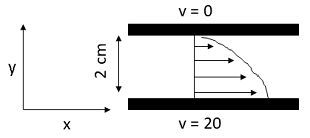
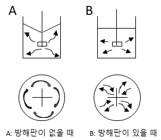
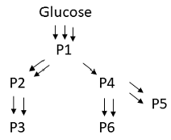

식품기사 (2020-06-06 기출문제)
1과목: 식품위생학
1. 인체의 감염경로는 경구감염과 경피감염이며, 대변과 함께 배출된 충란은 30℃ 전후의 온도에서 부화하여 인체에 감염성이 강한 사상유충이 되고, 노출된 인체의 피부와 접촉으로 감염되어 소장상부에서 기생하는 기생충은?
- 구충
- 회충
- 요충
- 편충
(정답률: 71%)

2. 아래의 설명에 해당하는 인수공통감염병은?

- 결핵
- 탄저
- 돈단독
- 브루셀라병
(정답률: 79%)
3. 식품첨가물의 지정절차에서 첨가물 사용의 기술적 필요성 및 정당성에 해당하지 않는 것은?
- 식품의 품질을 보존하거나 안정성을 향상
- 식품의 영양성분을 유지
- 특정 목적으로 소비자를 위하여 제조하는 식품에 필요한 원료 또는 성분을 공급
- 식품의 제조·가공 과정 중 결함 있는 원재료를 은폐
(정답률: 92%)
4. 방사선 조사(照射)식품과 관련된 설명으로 틀린 것은?
- 방사선 조사량은 Gy로 표시하며, 1Gy=1J/kg이다.
- 사용 방사선의 선원 및 선종은 60CO의 감마선이다.
- 식품의 발아억제, 숙도조절 등의 효과가 있다.
- 조사식품을 원료로 사용한 경우는 제조·가공한 후 다시 조사하여야 한다.
(정답률: 90%)
5. 식용 패류 중 마비성 독소의 축적과정과 관계가 깊은 것은?
- 플랑크톤
- 해양성 효모
- 패류기생 바이러스
- 내염성균
(정답률: 66%)
6. 염화비닐(Vinyl chloride) 수지를 주성분으로 하는 합성수지제의 기구 및 용기에 사용되는 가소제로 문제가 되는 것은?
- 염화비닐
- 프탈레이트
- 크레졸 인산 에스테르
- 카드뮴
(정답률: 66%)
7. 다음 중 허용 살균제 또는 표백제가 아닌 것은?
- 고도표백분
- 차아염소산나트륨
- 무수아황산
- 옥시스테아린
(정답률: 62%)
8. 식품취급자가 화농성 질환이 있는 경우 감염되기 쉬운 식중독균은?
- 장염 Vibrio 균
- Botulinus 균
- Salmonella 균
- 황색 포도상구균
(정답률: 87%)
9. 다음 중 리케치아에 의한 식중독은?
- 성홍열
- 유행성 간염
- 쯔쯔가무시병
- 디프테리아
(정답률: 65%)
10. 식품의 안전성과 수분활성도(Aw)에 관한 설명으로 틀린 것은?
- 비효소적 갈변 : 다분자수분층보다 낮은 Aw에서는 발생하기 어렵다.
- 효소 활성 : Aw가 높을 때가 낮을 때보다 활발하다.
- 미생물의 성장 :보통 세균 증식에 필요한 Aw는 0.91정도이다.
- 유지의 산화반응 : Aw가 0.5~0.7이면 반응이 일어나지 않는다.
(정답률: 79%)
11. 감염을 예방하기 위해서는 은어와 같은 민물고기의 생식을 피하는 것이 가장 좋은 기생충은?
- 간디스토마
- 폐디스토마
- 요코가와흡충
- 광절열두조층
(정답률: 55%)
12. 바이러스성 식중독의 병원체가 아닌 것은?
- EHEC바이러스
- 로타바이러스A군
- 아스트로바이러스
- 장관 아데노바이러스
(정답률: 78%)
13. 유가공품·식육가공품·알가공품의 대장균 확인시험에서 ( ) 안에 알맞은 내용은?

- - - - -
- - - + +
- + + - -
- + + + +
(정답률: 71%)
14. 다음 중 열가소성 수지는?
- polyvinyl chloride(PVC)
- phenol 수지
- melamine 수지
- epoxy 수지
(정답률: 77%)
15. 식품원료 중 식물성 원료(조류 제외)의 총아플라톡신 기준은? (단, 총아플라톡신은 B1, B2, G1, G2의 합을 말한다.)
- 20 ㎍/㎏ 이하
- 15 ㎍/㎏ 이하
- 5 ㎍/㎏ 이하
- 1 ㎍/㎏ 이하
(정답률: 62%)
16. 도자기, 법랑기구 등에서 식품으로 이행이 예상되는 물질은?
- 납
- 주석
- 가소제
- 안정제
(정답률: 80%)
17. 먹는물(수돗물)의 안전성을 확보하기 위한 방편으로 관리되고 있는 유해물질로서, 유기물 또는 화학물질에 염소를 처리하여 생성되는 발암성 물질은?
- 트리할로메탄
- 메틸알코올
- 니트로사민
- 다환방향족 탄화수소류
(정답률: 82%)
18. 식품첨가물 중 유화제로 사용되지 않는 것은?
- 폴리소르베이트류
- 글리세린지방산에스테르
- 소르비탄지방산에스테르
- 몰포린지방산염
(정답률: 63%)
19. 다음 중 잔존성이 가장 큰 염소제 농약은?
- Aldrin
- DDT
- Telodrin
- γ-BHC
(정답률: 88%)
20. 식품제조시설의 공기살균에 가장 적합한 방법은?
- 승홍수에 의한 살균
- 열탕에 의한 살균
- 염소수에 의한 살균
- 자외선 살균 등에 의한 살균
(정답률: 89%)
2과목: 식품화학
21. 다음 provitamin A 중 Vitamin A의 효과가 가장 큰 것은?
- α-catotene
- β-carotene
- ν-carotene
- Cryptoxantin
(정답률: 85%)
22. 철(Fe)에 대한 설명으로 틀린 것은?
- 철은 식품에 헴형(heme)과 비헴형(non-heme)으로 존재하며 헴형의 흡수율이 비헴형보다 2배 이상 높다.
- 비타민 C는 철 이온을 2가철로 유지시켜주어 철이온의 흡수를 촉진한다.
- 두류의 피틴산(phytic acid)은 철분 흡수를 촉진한다.
- 달걀에 함유된 황이 철분과 결합하여 검은색을 나타낸다.
(정답률: 67%)
23. 다음 중 인지질이 아닌 것은?
- 레시틴(lecithin)
- 세팔린(cephalin)
- 세레브로시드(cerebrosides)
- 카르디올리핀(cardiolopin)
(정답률: 61%)
24. 단백질 변성에 따른 변화가 아닌 것은?
- 단백질분해효소에 의해 분해되기 쉬워 소화율이 증가한다.
- 단백질의 친수성이 감소하여 용해도가 감소한다.
- 생물학적 특성들이 상실된다.
- -OH, -COOH, C=O기 등이 표면에 나타나 반응성이 감소한다.
(정답률: 51%)
25. 식품 성분의 가공 중 발생하는 냄새 성분 변화에 대한 설명으로 틀린 것은?
- 불포화지방산이 많이 있는 유지가 열분해되면 alcohol, aldehydes, ketones 등이 많이 발생한다.
- 마늘이나 양파 등이 함유된 재료를 가열하면 황 함유 휘발성분이 발생한다.
- 설탕물을 150~180℃의 고온으로 가열하면 5탄당에서는 furfural이, 6탄당에서는 5-hydroxymethyl furfural이 주로 형성된다.
- 가오리나 홍어 저장 시 발생하는 자극성 냄새는 요소가 미생물에 의해 분해되어 트리메탈아민을 생성하기 때문이다.
(정답률: 58%)
26. 사카린나트륨의 구조식은?




(정답률: 60%)
27. 식품의 관능검사 중 특성차이검사에 해당하는 것은?
- 단순차이검사
- 일-이점검사
- 이점비교검사
- 삼점검사
(정답률: 74%)
28. 당근에서 카로티노이드(carotenoids)를 분석하는 방법에 대한 설명으로 틀린 것은?
- 카로티노이드는 빛에 의해 쉽게 분해되므로 암소에서 실험을 진행한다.
- 당근 시료에서 카로티노이드를 분리하기 위해 수용액상에서 끓여 용출시킨다.
- 카로티노이드는 산소에 의해 쉽게 산화되므로 질소가스를 공급한다.
- 분리된 카로티노이드는 보통 역상 HPLC 또는 분광광도계를 활용하여 정량한다.
(정답률: 80%)
29. 그림과 같이 y축 방향으로 2cm 떨어져서 평행하게 놓여진 두 쳥면 사이에 에탄올(μ+1.77cP, 0℃)이 담겨져 있다. 밑면을 20cm/s의 속도로 x축 방향으로 움직일 때 y축 방향으로 작용하는 전단 응력은?

- 0.177dyne/cm2
- 0.354dyne/cm2
- 0.531dyne/cm2
- 0.708dyne/cm2
(정답률: 52%)
30. 삶은 달걀의 난황 주위가 청록색으로 변색되는 주요 원인은?
- 비타민C가 산화되어 노른자의 철(Fe)과 결합하기 때문
- 열에 의하여 타닌(tannin)이 분해되어 철(Fe)이 형성되기 때문
- 달걀 흰자의 황화수소(H2S)가 노른자의 철(Fe)과 결합하여 황화철(FeS)을 생성하기 때문
- 단백질의 구성성분인 질소가 산화되기 때문
(정답률: 86%)
31. 1M NaCl, 0.5M KCl, 0.25M HCl이 준비되어 있다. 최종 농도 0.1M NaCl, 0.1M KCl, 0.1M HCl 혼합수용액 1000mL를 제조하고자 할 때 각각 첨가되어야 할 시약의 부피는 얼마인가?
- 1M NaCl 용액 50mL, 0.5M KCl 100mL, 0.25M HCl 200mL를 첨가 후 물 650mL를 첨가한다.
- 1M NaCl 용액 75mL, 0.5M KCl 150mL, 0.25M HCl 300mL를 첨가 후 물 475mL를 첨가한다.
- 1M NaCl 용액 100mL, 0.5M KCl 200mL, 0.25M HCl 400mL를 첨가 후 물 300mL를 첨가한다.
- 1M NaCl 용액 125mL, 0.5M KCl 250mL, 0.25M HCl 500mL를 첨가 후 물 120mL를 첨가한다.
(정답률: 76%)
32. 채소류의 이화학적 특성으로 틀린 것은?
- 파의 자극적인 냄새와 매운 맛 성분은 주로 황화아릴 성분이다.
- 마늘에서 주로 효용성이 있다고 알려진 성분은 알리신이다.
- 오이의 쓴맛 성분은 쿠쿠르비타신(cucurbitacin)이라고 하는 배당체이다.
- 호박의 황색 성분은 클로로필(chlorophyll)계통의 색소이다.
(정답률: 80%)
33. 수분활성치(Aw)를 저하시켜 식품을 저장하는 방법만으로 나열된 것은?
- 동결저장법, 냉장법, 건조법, 염장법
- 냉장법, 염장법, 당장법, 동결저장법
- 냉장법, 건조법, 염장법, 당장법
- 염장법, 당장법, 동결저장법, 건조법
(정답률: 74%)
34. 훈제품 제조와 관련된 설명으로 틀린 것은?(문제 오류로 가답안 발표시 3번으로 발표되었으나 확정답안 발표시 3, 4번이 정답처리 되었습니다. 여기서는 가답안인 3번을 누르면 정답 처리 됩니다.)
- 연기성분 중에는 페놀 성분도 포함되어 있다.
- 연기성분 중 포름알데히드, 크레졸은 환원성 물질로 지방산화를 막아 준다.
- 질산칼륨을 첨가하는 이유는 아질산염을 거쳐서 산화질소가 유리되는 것을 방지하기 위한 것이다.
- 생성된 산화질소는 미오글로빈과 결합 후 가열과정을 통하여 트로소미오크로모겐으로 변화한다.
(정답률: 79%)
35. NaOH의 분자량이 40일 때 NaOH 30g의 몰수는?
- 0.65
- 0.75
- 1.33
- 10
(정답률: 78%)
36. 다음 중 단순지질은?
- phosphatide
- glycolipid
- sulfolipid
- triglyceride
(정답률: 66%)
37. 흑겨자의 매운 맛과 관련 깊은 성분은?
- 캡사이신(capsaicin)
- 알릴 이소티오시아네이트(allyl isothiocynate)
- 글루코만난(glucomannan)
- 알킬 머르캅탄(alkyl mercaptan)
(정답률: 74%)
38. 선식 제품과 같은 분말 제품의 경우 용해도가 낮아서 소비자들이 식용하고자 녹일 때 잘 용해되지 않는다. 이를 개선하고자 할 때 어떤 방법이 가장 바람직한가?
- 가열처리하여 용해도를 증가시킨다.
- 분무 건조기를 이용하여 엉김현상(agglomeration)을 유도한다.
- 유화제 및 물성 개량제를 첨가한다.
- 습윤 조절제 및 연화 방지제를 첨가한다.
(정답률: 74%)
39. 관능검사에서 사용되는 정량적 평가 방법 중 3개 이상 시료의 독특한 특성 강도를 순서대로 배열하는 방법은?
- 분류법
- 등급법
- 순위법
- 척도법
(정답률: 82%)
40. 유중수적형(W/O) 교질상 식품은?
- 마가린(margarine)
- 우유(milk)
- 마요네즈(mayonnaise)
- 아이스크림(ice cream)
(정답률: 76%)
3과목: 식품가공학
41. 연어, 송어 등의 어육에 들어 있는 색소는?
- 클로로필
- 카로티노이드
- 플라보노이드
- 멜라닌
(정답률: 68%)
42. 고기의 해동강직에 대한 설명으로 틀린 것은?
- 골격으로부터 분리되어 자유수축이 가능한 근육은 60~80%까지의 수축을 보인다.
- 가죽처럼 질기고 다즙성이 떨어지는 저품질의 고기를 얻게 된다.
- 해동강직을 방지하기 위해서는 사후강직이 완료된 후에 냉동해야 한다.
- 냉동 및 해동에 의하여 고기의 단백질과 칼슘결합력이 높아져서 근육수축을 촉진하기 때문에 발생한다.
(정답률: 63%)
43. 유가공품에 대한 설명 중 틀린 것은?
- 가공버터는 제품 중 유지방분의 함량이 제품의 지방함량에 대한 중량비율로서 50%이상이어야 한다.
- 버터(butter)에서 처닝(chunning)이란 지방구막 형성 단백질을 파괴시켜 지방구들을 서로 결합시키는 공정이다.
- 아이스크림(ice cream)에서 오버런(over run)%는 80~100%가 가장 적합하다.
- 발효유는 식품첨가물을 첨가하지 않고 천연으로 만든 것이다.
(정답률: 62%)
44. 라미네이트 필름에 대한 설명 중 옳은 것은?
- 알루미늄박만을 포장재료로 사용한 것이다.
- 종이를 사용한 것이다.
- 두 가지 이상의 필름, 종이 또는 알루미늄박을 접착시킨 것을 말한다.
- 셀로판을 사용한 포장재료를 말한다.
(정답률: 83%)
45. 경화유 제조 시 수소첨가의 주된 목적이 아닌 것은?
- 기름의 안정성을 향상시킨다.
- 경도 등 물리적 성질을 개선한다.
- 색깔을 개선한다.
- 소화가 잘 되도록 한다.
(정답률: 68%)
46. 신선한 식품을 냉장고에 저온저장할 때 저온저장의 효과가 아닌 것은?
- 미생물의 발육 속도를 느리게 한다.
- 저온균을 살균한다.
- 호흡 작용 속도를 느리게 한다.
- 효소 및 화학 반응속도를 느리게 한다.
(정답률: 85%)
47. 식품첨가물로 사용되는 hexane에 대한 설명으로 틀린 것은?
- 주로 n-헥산(C6H14)을 함유한다.
- 석유 성분 중에서 n-헥산의 비점 부근에서 증류하여 얻어진 것이다.
- 유지류를 비롯해 향료 및 그 외 성분의 추출 등에 사용된다.
- 무색투명한 비휘발성 액체이다.
(정답률: 73%)
48. 전분액화에 대한 설명으로 틀린 것은?
- 전분의 산액화는 효소 액화보다 액화 시간이 짧다.
- 전분의 산액화는 연속 산액화 장치로 할 수 있다.
- 전분의 산액화는 효소 액화보다 백탁이 생길 염려가 크다.
- 산액화는 호화온도가 높은 전분에도 작용이 가능하다.
(정답률: 51%)
49. 유당분해효소결핍증에 직접적으로 관여하는 효소는?
- 락토페록시다제(lactoperoxidase)
- 리소자임(lyxozyme)
- 락타아제(lactase)
- 락테이트 디하이드로지나제(lactate dehydrogenase)
(정답률: 76%)
50. 훈연의 목적이 아닌 것은?
- 향기의 부여
- 제품의 색 향상
- 보존성 향상
- 조직의 연화
(정답률: 75%)
51. 두부의 제조 원리로 옳은 것은?
- 콩 단백질의 주성분인 글리시닌(glycinin)을 묽은 염류용액에 녹이고 이를 가열한 후 다시 염류를 가하여 침전시킨다.
- 콩 단백질의 주성분인 베타-락토글로불린(β-lacto globulin)을 묽은 염류용액에 녹이고 이를 가열한 후 다시 염류를 가하여 침전시킨다.
- 콩 단백질의 주성분인 알부민(albumin)을 묽은 염류용액에 녹이고 이를 가열한 후 다시 염류를 가하여 침전시킨다.
- 콩 단백질의 주성분인 글리시닌(glycinin)을 산으로 침전시켜 제조한다.
(정답률: 71%)
52. 스테비오사이드(stevioside)의 특성이 아닌 것은?
- 설탕에 비하여 약 200배의 감미를 가지고 있다.
- pH 변화와 열에 안정하다.
- 장시간 가열 시 산성에서는 안정하나 알칼리성에서는 침전이 형성된다.
- 비발효성이다.
(정답률: 61%)
53. 다음은 강하게 혼합시키는 교반기의 용기 벽면에 설치된 방해판(baffle plate)에 대한 그림이다. 위의 그림은 측면도이고, 아래 그림은 위에서 내려다 본 평면도이다. 방해판의 역할에 대한 A와 B의 비교 설명 중에서 그 원리가 틀린 것은?

- B - 액체의 흐름이 용기 벽면의 방해판에 부딪혀 난류 상태가 되므로 교반 효과가 향상된다.
- B - 액체의 흐름이 소용돌이가 생기지 않아 공기가 혼입되지 않는다.
- A - 고체입자가 있을 때는 회전하는 원심력에 의하여 입자가 용기 벽 쪽으로 밀려나게 된다.
- A - 교반 날개가 회전하면 액체가 일정한 방향으로만 돌아가므로 교반 효율이 높아진다.
(정답률: 65%)
54. 동결 건조에서 승화열을 공급하는 방법으로 이용할 수 없는 것은?
- 접촉판으로 가열하는 방식
- 열풍으로 가열하는 방식
- 적외선으로 가열하는 방식
- 유전(誘電)으로 가열하는 방식
(정답률: 49%)
55. 자일리톨(xylitol)에 대한 설명으로 틀린 것은?
- 자작나무, 떡갈나무, 옥수수 등 식물에 주로 들어있는 천연 소재의 감미료로 청량감을 준다.
- 자일로스에 수소를 첨가하여 제조하는 기능성 원료이다.
- 자일리톨은 입 안의 충치균이 분해하지 못하는 6탄당 구조를 갖고 있다.
- 한 번에 40g 이상 과량으로 섭취할 경우 복부팽만감 등의 불쾌감을 느낄 수 있다.
(정답률: 68%)
56. 열교환장치를 사용하여 시간당 우유 5500kg을 5℃에서 65℃까지 가열하고자 한다. 우유의 비열이 3.85kJ/kg·K일 때 필요한 열에너지의 양은?
- 746.6kW
- 352.9kW
- 240.6kW
- 120.2kW
(정답률: 49%)
57. 밀감을 통조림으로 가공할 때 속껍질 제거 방법으로 적합한 것은?
- 산처리
- 알칼리처리
- 열탕처리
- 산, 알칼리 병용처리
(정답률: 72%)
58. 과실 주스 또는 과육에 설탕을 첨가하여 농축한 제품에 대한 설명 중 틀린 것은?
- 젤리(Jelly)는 과일주스에 설탕을 넣고 농축, 응고 시킨 제품
- 과일 버터(Fruit butter)는 펄핑(pulping)한 과일의 과육에 향료, 다른 과일즙 등을 섞어서 반고체가 될 때까지 농축시킨 제품
- 프리저스(Preserve)는 과일을 절단하거나 원형 그대로 끓여서 농축한 제품
- 마멀레이드(Mamalade)는 과육에 설탕을 첨가하여 적당한 농도로 농축한 제품
(정답률: 61%)
59. 곡물의 도정방법에서 건식도정과 습식도정 중 습식도정에만 해당되는 설명으로 옳은 것은?
- 겨와 배아가 배유로부터 분리된다.
- 곡물 중 함수량을 줄인 후 도정하는 것이다.
- 배유로부터 전분과 단백질을 분리할 목적으로 사용될 수 있다.
- 쌀, 보리, 옥수수에 사용한다.
(정답률: 67%)
60. 콩의 영양을 저해하는 인자와 관계가 없는 것은?
- 트립신 저해제(trypsin inhibitor) - 단백질 분해 효소인 트립신의 작용을 억제하는 물질
- 리폭시게나제(lipoxygenase) - 비타민과 지방을 결합시켜 비타민의 흡수를 억제하는 물질
- Phytate(inosito; hexaphosphate) - Ca, P, Mg, Fe, Zn 등과 불용성 복합체를 형성하여 무기물의 흡수를 저해시키는 작용을 하는 물질
- 라피노스(raffinose), 스타키오스(stachyose) - 우리 몸 속에 분해 효소가 없어 소화되지 않고, 대장 내의 혐기성 세균에 의해 분해되어 N2, CO2, H2, CH4 등의 가스를 발생시키는 장내 가스 인자
(정답률: 55%)
4과목: 식품미생물학
61. 홍조류(red algae)에 속하는 것은?
- 미역
- 다시마
- 김
- 클로렐라
(정답률: 80%)
62. 식품작업장에서 식품안전관리인증기준(Hazard Analysis Critical Control Point)을 적용하여 관리하는 경우 물리적 위해요소에 해당하는 것은?
- 위해미생물
- 기생충
- 돌조각
- 항생물질
(정답률: 80%)
63. 효모에 의하여 이용되는 유기 질소원은?
- 펩톤
- 황산암모늄
- 인산암모늄
- 질산염
(정답률: 46%)
64. Heterocaryosis를 가장 잘 설명한 것은?
- 접합으로 한 균사의 핵과 다른 균사의 핵이 공존
- 한 균사와 다른 핵과 접합하여 공존
- 한 개의 핵이 다른 핵과 접합
- 한 균사의 두 개의 핵이 공존
(정답률: 59%)
65. 돌연변이에 대한 설명 중 틀린 것은?
- 자연적으로 일어나는 자연돌연변이와 변이원 처리에 의한 인공돌연변이가 있다.
- 돌연변이의 근본적 원인은 DNA의 nucleotide 배열의 변화이다.
- 염기배열 변화의 방법에는 염기첨가, 염기결손, 염기치환 등이 있다.
- Point mutation은 frame shift에 의한 변이에 비복귀돌연변이(back mutation)가 되기 어렵다.
(정답률: 70%)
66. 다음 표의 반응은 생화학 돌연변이체를 이용한 amino-acid의 생성에 관한 것이다. 최종생성물인 P3을 얻고자 할 때 어느 영양요구주가 가장 적합한가? (단, 여기서 생성물 P4는 P1의 생성을 feedback 억제한다고 가정한다.)

- P1 요구주
- P2 요구주
- P4 요구주
- P6 요구주
(정답률: 58%)
67. 파아지(phage)에 대한 대책으로 적합하지 않은 것은?
- 연속교체법(rotation system)을 이용한다.
- 살균을 철저하게 한다.
- 내성균주를 사용하여 발효를 한다.
- 생산 균주를 1종으로 제한한다.
(정답률: 73%)
68. 담자균류의 특징과 관계가 없는 것은?
- 담자기
- 경자
- 정낭
- 취상돌기
(정답률: 62%)
69. 다음 곰팡이 중 가근(假根, rhizoid)이 있는 것은?
- Aspergillus 속
- Penicillium 속
- Rhizopus 속
- Mucor 속
(정답률: 77%)
70. 출아(budding)로 영양증식을 하는 효모 중에서 세포의 어느 곳에서나 출아가 되는 다극 출아(multilateral budding)를 하는 것은?
- Hanseniaspora 속
- Kloeckera 속
- Nadsonia 속
- Saccharomyces 속
(정답률: 65%)
71. 전분을 효소로 분해하여 포도당을 제조할 때 사용하는 미생물 효소는?
- Aspergillus의 α-amylase와 acid protease
- Aspergillus의 glucoamylase와 transglucosidase
- Bacillus의 protease와 α-amylase
- Aspergillus의 α-amylase와 Rhizopus의 glucoamylase
(정답률: 69%)
72. ATP를 소비하면서 저농도에서 고농도로 농도 구배에 역행하여 용질 분자를 수송하는 방법은?
- 단순 확산(simple diffusion)
- 촉진 확산(facilitated diffusion)
- 능동 수송(active transport)
- 세포 내 섭취작용(endocyosis)
(정답률: 82%)
73. 최초 세균수는 a이고 한 번 분열 하는데 3시간이 걸리는 세균이 있다. 최적의 증식조건에서 30시간 배양 후 총균수는?
- a × 330
- a × 210
- a × 530
- a × 25
(정답률: 82%)
74. 단백질과 RNA로 구성되어 있으며 단백질 합성을 하는 것은?
- 미토콘드리아(mitochondria)
- 크로모좀(chromosome)
- 리보솜(ribosome)
- 골지체(golgi apparatus)
(정답률: 83%)
75. 일반적인 간장이나 된장의 숙성에 관여하는 내삼투압성 효모의 증식 가능한 최저 수분활성도는?
- 0,95
- 0.88
- 0.80
- 0.60
(정답률: 68%)
76. 미생물 생육곡선 (growth curve)과 관련한 설명으로 옳은 것은?
- 배양시간 경과에 따른 균수를 측정하고 세미로그 그래프에 표시한다.
- 온도의 변화에 따른 미생물 수 변화를 확인하여 그래프로 그린 것이다.
- 곰팡이의 경우는 포자의 수를 측정하여 생육정도를 비교한다.
- 대사산물 생산량에 따라 유도기-대수기-정지기-사멸기로 분류한다.
(정답률: 53%)
77. 알코올 발효에 대한 설명 중 틀린 것은?
- 미생물이 알코올을 발효하는 경로는 EMP경로와 ED경로가 알려져 있다.
- 알코올 발효가 진행되는 동안 미생물 세포는 포도당 1분자로부터 2분자의 ATP를 생산한다.
- 효모가 알코올 발효하는 과정에서 아황산나트륨을 적당량 첨가하면 알코올 대신 글리세롤이 축적되는데, 그 이유는 아황산나트륨이 alcohol dehydrogenase활성을 저해하기 때문이다.
- EMP경로에서 생산된 pyruvic acid는 decarboxylase에 의해 탈탄산되어 acetaldehyde로 되고 다시 NADH로부터 alcohol dehydrogenase에 의해 수소를 수용하여 ethanol로 환원된다.
(정답률: 44%)
78. 세균세포의 협막과 점질층의 구성물질인 것은?
- 뮤코(muco) 다당류
- 펙틴(pectin)
- RNA
- DNA
(정답률: 66%)
79. 저온살균에 대한 설명 중 틀린 것은?
- 식품 중에 존재하는 미생물을 완전히 살균하는 것이다.
- 가열이 강하면 품질 저하가 현저한 식품에 이용된다.
- 저온 살균 후 혐기상태 유지나 고염, 식염 등의 조건을 이용할 수 있다.
- 최소한의 온도(통상 100℃ 이하)가 살균에 적용된다.
(정답률: 76%)
80. 효모를 분리하려고 할 때 배지의 pH로 가장 적합한 것은?
- pH 2.0~3.0
- pH 4.0~6.0
- pH 7.0~8.0
- pH 10.0~12.0
(정답률: 75%)
5과목: 생화학 및 발효학
81. 효소의 작용에 대한 설명 중 틀린 것은
- 단백질로 구성되어 있다.
- 특정 기질에 선택적 촉매반응을 한다.
- 온도에 영향을 받는다.
- 한 효소는 주로 2개 이상의 기질에 촉매 반응한다.
(정답률: 81%)
82. 위스키에 대한 설명 중 틀린 것은?
- 위스키는 제법에 따라 스카치(Scotch)형과 아메리카(American)형으로 대별된다.
- 아메리칸 위스키는 미국에서 생산되는 위스키이다.
- 맥아(malt) 위스키는 대맥 맥아로만 만든 위스키이다.
- 곡류(grain) 위스키는 맥아 이외에 옥수수, 라이맥을 사용하여 단식증류기로 증류한 것이다.
(정답률: 51%)
83. 효소의 직접적인 촉매작용의 메커니즘으로 제시되지 않는 것은?
- 근접 변형효과
- 공유결합 촉매
- 산-염기 촉매
- 조효소 효과
(정답률: 46%)
84. 진핵세포의 DNA와 결합하고 있는 염기성 단백질은?
- albumin
- globulin
- histone
- histamine
(정답률: 64%)
85. 아미노산 대사에 필수적인 비타민으로 알려진 비타민 B6의 종류가 아닌 것은?
- 피리독신(pyridoxine)
- 피리독사민(pyridoxamine)
- 피리딘(pyridine)
- 피리독살(pyridoxal)
(정답률: 68%)
86. 맥주 발효에서 맥아를 사용하는 목적과 거리가 먼 것은?
- 당화과정에 필요한 효소들을 생성 또는 활성화
- 맥주의 향미와 색깔에 관여
- 효모에 필요한 영양원 제공
- 유해 미생물의 생육 억제
(정답률: 73%)
87. 5‘-뉴클레오타이드를 공업적으로 분해법에 의해 제조하기 위하여 사용되는 RNA 원료는 효모를 사용한다. 이 원료로서 사용되는 효모의 특징이 아닌 것은?
- RNA의 함량이 높다.
- RNA/DNA의 비율이 낮다.
- 균체의 분리 및 회수가 간단하다.
- RNA 유출 후 균체단백질 이용이 가능하다.
(정답률: 64%)
88. 세포 내 리보솜(ribosome)에서 일어나는 단백질 합성과 직접적으로 관여하는 인자가 아닌 것은?
- rRNA
- tRNA
- mRNA
- DNA
(정답률: 74%)
89. 사람 체내에서의 콜레스테롤 생합성 경로를 순서대로 표시한 것은?
- acetyl CoA → L-mevalonic acid → squalene → lanosterol → cholesterol
- acetyl CoA → lanosterol → squalene → L-mevalonic acid → cholesterol
- acetyl CoA → squalene → lanosterol → L-mevalonic acid → cholesterol
- acetyl CoA → lanosterol → L-mevalonic acid → squalene → cholesterol
(정답률: 61%)
90. 파지(phage)를 운반체로 하여 공여균의 유전자를 수용균에 운반시켜 수용균의 염색체 내 유전자와 재조합시키는 유전자재조합기술법은?
- 형질전환(transformation)
- 접합(conjugation)
- 형질도입(transduction)
- 세포융합(cell fusion)
(정답률: 70%)
91. 피루브산(pyruvic acid)을 탈탄산하여 아세트알데히드(acetaldehyde)로 만드는 효소는?
- lactate dehydrogenase
- pyruvate carboxylase
- pyruvate decarboxylase
- alcohol dehydrogenase
(정답률: 72%)
92. 사람과 원숭이가 비타민 C를 합성하지 못하는 이유는?
- 장내 세균에 의해 방해받기 때문이다.
- L-Gulonolactone oxidase 효소가 없기 때문이다.
- avidin 단백질이 비오틴과 결합하여 합성을 방해하기 때문이다.
- 세포에 합성을 방해하는 항생물질이 있기 때문이다.
(정답률: 71%)
93. 산업용 미생물 배지 제조시 사용되는 질소원으로 적합하지 않은 것은?
- 사탕수수 폐당밀
- 요소
- 암모늄염
- 콩가루
(정답률: 50%)
94. 맥주제조 시 후발효가 끝난 맥주의 한냉혼탁(cold haze)을 방지하기 위하여 사용되는 식물성 효소는?
- 파파인(papain)
- 펙티나아제(pectinase)
- 레닛(rennet)
- 나린진나아제(naringinase)
(정답률: 57%)
95. Glutamic acid를 발효하는 균의 공통된 특징은?
- 혐기성이다.
- 포자 형성균이다.
- 생육인자로 biotin을 요구한다.
- 운동성이 있다.
(정답률: 69%)
96. 정미성 nucleotide가 아닌 것은?
- GMP
- XMP
- IMP
- AMP
(정답률: 52%)
97. 운동 중 근육 활동으로 생성되는 과잉의 젖산을 포도당으로 합성하는 당신생(gluconeogenesis)이 일어나는 기관은?
- 근육
- 간
- 신장
- 췌장
(정답률: 76%)
98. 제빵 발효와 관련된 설명 중 틀린 것은?
- 발효빵에 사용되는 건조효모는 압착효모에 비해 발효력이 우수하나 반드시 냉장보관을 하여야 한다.
- 효모는 발효성 당을 분해하여 에탄올과 이산화탄소를 만들어 반죽을 팽창시킨다.
- 밀가루에 포함된 단백질은 단백질 가수분해에 의해 가수분해되어 질소원으로 이용된다.
- 빵효모는 이산화탄소 발생량을 기준으로 최적 활성은 30℃ 정도이다.
(정답률: 59%)
99. 포도당(glucose) 1kg을 사용하여 알코올발효와 초산발효를 진행시켰다. 알코올과 초산의 실제 생산수율은 각각의 이론적 수율의 90%와 85%라고 가정할 때 실제 생산될 수 있는 초산의 양은?
- 1.304kg
- 1.1084kg
- 0.5097kg
- 0.4821kg
(정답률: 37%)
100. 광합성 과정에서 CO2의 첫 번째 수용체가 되는 것은?
- Ribulose-1,5-disphosphate
- 3-Phosphoglyceraldehyde
- 3-Phosphoglyceric acid
- Sedoheptulose 1,7-diphosphate
(정답률: 43%)